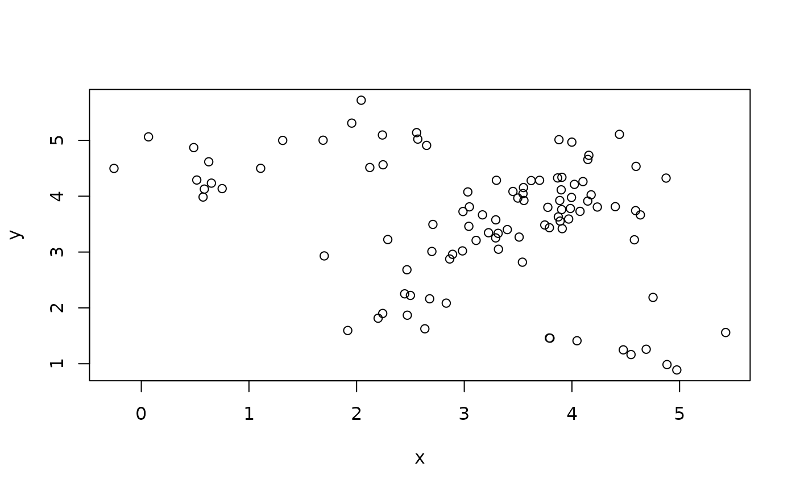
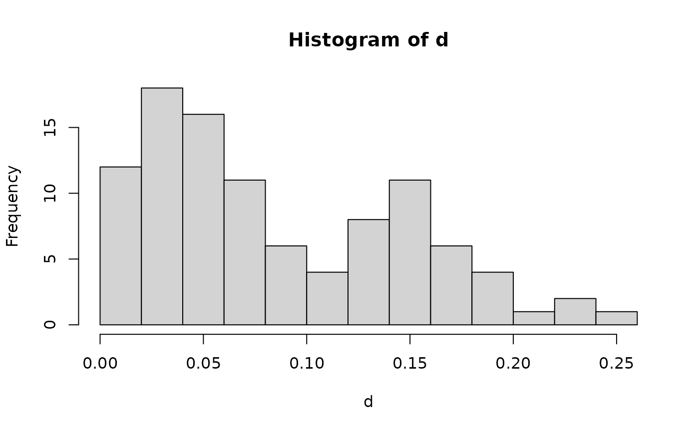
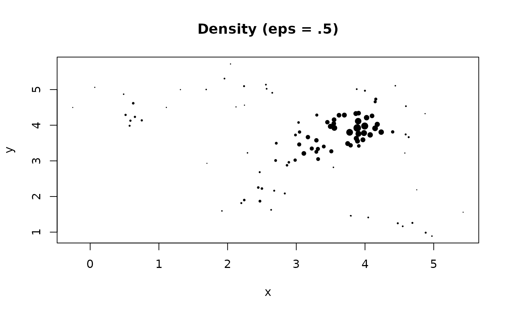
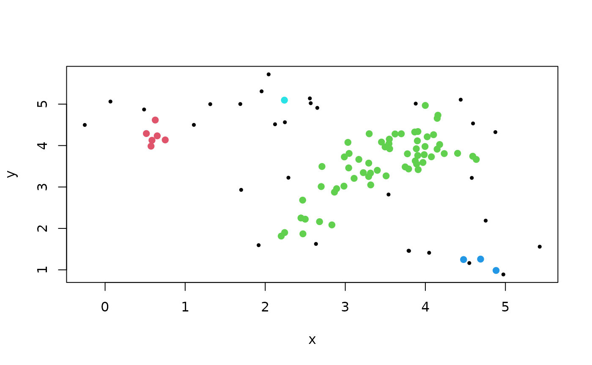

Calculate the local density at each data point as either the number of
points in the eps-neighborhood (as used in dbscan()) or perform kernel density
estimation (KDE) using a uniform kernel. The function uses a kd-tree for fast
fixed-radius nearest neighbor search.
Usage
pointdensity(
x,
eps,
type = "frequency",
search = "kdtree",
bucketSize = 10,
splitRule = "suggest",
approx = 0
)Arguments
- x
a data matrix or a dist object.
- eps
radius of the eps-neighborhood, i.e., bandwidth of the uniform kernel). For the Gaussian kde, this parameter specifies the standard deviation of the kernel.
- type
"frequency","density", or"gaussian". should the raw count of points inside the eps-neighborhood, the eps-neighborhood density estimate, or a Gaussian density estimate be returned?- search, bucketSize, splitRule, approx
algorithmic parameters for
frNN().
Value
A vector of the same length as data points (rows) in x with
the count or density values for each data point.
Details
dbscan() estimates the density around a point as the number of points in the
eps-neighborhood of the point (including the query point itself).
Kernel density estimation (KDE) using a uniform kernel, which is just this point
count in the eps-neighborhood divided by \((2\,eps\,n)\), where
\(n\) is the number of points in x.
Alternatively, type = "gaussian" calculates a Gaussian kernel estimate where
eps is used as the standard deviation. To speed up computation, a
kd-tree is used to find all points within 3 times the standard deviation and
these points are used for the estimate.
Points with low local density often indicate noise (see e.g., Wishart (1969) and Hartigan (1975)).
References
Wishart, D. (1969), Mode Analysis: A Generalization of Nearest Neighbor which Reduces Chaining Effects, in Numerical Taxonomy, Ed., A.J. Cole, Academic Press, 282-311.
John A. Hartigan (1975), Clustering Algorithms, John Wiley & Sons, Inc., New York, NY, USA.
Examples
set.seed(665544)
n <- 100
x <- cbind(
x=runif(10, 0, 5) + rnorm(n, sd = 0.4),
y=runif(10, 0, 5) + rnorm(n, sd = 0.4)
)
plot(x)

### calculate density around points
d <- pointdensity(x, eps = .5, type = "density")
### density distribution
summary(d)
#> Min. 1st Qu. Median Mean 3rd Qu. Max.
#> 0.0100 0.0400 0.0700 0.0908 0.1425 0.2600
hist(d, breaks = 10)

### plot with point size is proportional to Density
plot(x, pch = 19, main = "Density (eps = .5)", cex = d*5)

### Wishart (1969) single link clustering after removing low-density noise
# 1. remove noise with low density
f <- pointdensity(x, eps = .5, type = "frequency")
x_nonoise <- x[f >= 5,]
# 2. use single-linkage on the non-noise points
hc <- hclust(dist(x_nonoise), method = "single")
plot(x, pch = 19, cex = .5)
points(x_nonoise, pch = 19, col= cutree(hc, k = 4) + 1L)
